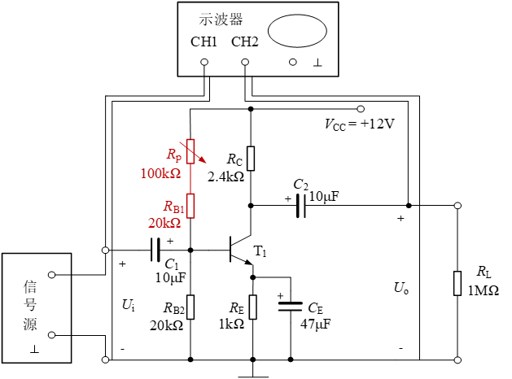

第1题（5分）
请简述单管交流放大电路实验的实验目的。
请简述单管交流放大电路实验的实验目的。
请列写单管交流放大电路实验的实验设备及元器件。
请简述单管交流放大电路实验的实验原理。
请上传单管交流放大电路实验的原始数据记录页。
根据表5-3中ui和uo的数据，推导说明Ce变化对输出波形影响的原因。
根据表5-4，并推导分析负载变化对交流电压放大倍数的影响原因。
自建坐标系，表明刻度及尺寸，绘制表5-5中的ui和uo波形，并注明失真判断。
输入信号合适的情况下，共射基本放大电路出现饱和失真或截止失真的原因是什么？电路中应调整哪个元件？

由于Vcc、Rp、RB1、RB2和地构成的回路一直处于耗能状态，请查阅资料，在实际的单管放大电路中，如何解决此问题？（可绘图说明）

在此次使用的放大电路中，如何提高电压放大倍数？
总结失真类型的判断方法，说明本实验中的放大电路的输出出现削顶失真时，为截止失真，还是饱和失真？这一结论适用于由PNP型管构成的共射级放大电路吗？请说明理由。
本次实验体会与建议。（本题不占分，可填“无”）。